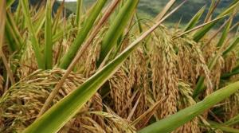
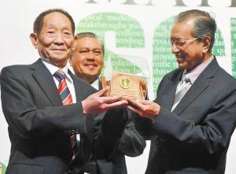

Research on hybrid rice began in 1964. In 1966, hybrid rice research on Miracle Rice (IR8) Yuan Longping was developed at IRRI Philippine International Rice Research Institute. Nanyou 2, the first hybrid rice strong and excellent combination, was bred in 1974. In 1975, hybrid rice seed production technology was successfully developed, which laid the foundation for the large-scale popularization of hybrid rice. The strategic idea of hybrid rice breeding put forward in 1985 pointed out the direction for the further development of hybrid rice.
In 1986, Yuan Longping put forward the breeding strategy of hybrid rice. The breeding method of hybrid rice was divided into three strategic development stages: three-line method, two-line method and one-line method. That is, the breeding procedure was developed in the direction of increasing efficiency from multiplication to simplification. From the level of heterosis utilization, it can be divided into three strategic development stages: utilization of heterosis between varieties, subspecies and distant heterosis, that is, utilization of heterosis is developing towards stronger and stronger direction. According to this assumption, hybrid rice is a new breakthrough every time it enters a new stage, which will push the rice yield to a higher level. The proposal of this strategic concept has pointed out the direction for China to carry out a new exploration of hybrid rice after it has obtained successful research and development of three-line hybrid rice.
On July 16, 1987, Yuan Longping students Li Bihu and Deng Huafeng found a photosensitive sterile rice in the indica rice three-line breeding materials of Anjiang Agricultural University. After two years and three generations of off-site propagation and observation, the agronomic characters of the material are neat and consistent, the sterile plant rate and sterility degree reach 100%, and the fertility transformation is obvious and synchronous. This new achievement has opened up a new situation for hybrid rice to transition from "three-line method" to "two-line method". In the same year, he put forward "the development strategy of hybrid rice", that is, the utilization of interspecific heterosis based on three-line method; Utilization of heterosis of indica and japonica subspecies based on two-line method; Utilization of distant heterosis based on one-line method.
In 1987, the national "863" plan made the research of two-line hybrid rice a special topic. Yuan Longping formed a two-line hybrid rice research collaboration group to carry out nationwide collaborative research. After nine years of hard work, the two-line hybrid rice was successful in 1995, with an average yield of 5% ~ 10% higher than that of the three-line hybrid rice at the same maturity. The quality of rice is generally good, and the planting area in recent years is about 6000 mu. Two-line hybrid rice is an original creation of China. Its success is a major breakthrough in crop breeding. It once again reflects the wisdom of Chinese hybrid rice scientists headed by Yuan Longping, and continues to keep China's hybrid rice research level at the world's leading level.
in 1997, he put forward the morphological model and breeding technology route of super high-yield hybrid rice aimed at improving photosynthesis efficiency, and began the research on "China super hybrid rice". This is a world-class problem. Through key research, the target of 700 kg per mu for the first phase of large-scale demonstration was achieved in 2000, which is about 50 kg more than the existing high-yield hybrid rice per mu. In particular, a new high-yield record of 1137.5 kg per mu was set in Yongsheng, Yunnan in 1999, and the popularization area of the first phase of super hybrid rice was 30 million mu.
Since 2001, Yuan Longping has guided the breeding of the second generation super hybrid rice with a large-scale demonstration yield of 800 kg per mu and excellent rice quality, and achieved the goal of the second generation super hybrid rice one year ahead of schedule in 2004. The second phase of super hybrid rice was popularized in 2006, with a planting area of 8 million mu in 2011, which is more than 50 kg/mu higher than the first phase of super hybrid rice in large-scale production. Still unsatisfied, Yuan Longping further proposed to combine conventional breeding with biotechnology to tackle the large-scale demonstration of 900 kilograms per mu in the third phase of super hybrid rice. After efforts, the target of 100 mu demonstration in the third phase of super hybrid rice in 2011 and 2012 reached 926.6 kilograms and 917.7 kilograms per mu respectively, marking the realization of the third phase of super hybrid rice in China. In 2013, the fourth phase of super hybrid rice production of 1000 kilograms per mu will be launched. On September 29, 2013, the fourth super rice 100 mu demonstration film "Y Liangyou 900" medium rice achieved an average per mu yield of 988.1 kg in Niuxing Village, Yanggu 'ao Township, Longhui County, Hunan Province, setting a world record. In 2006, Yuan Longping put forward a high-yield project of "three crops and four crops", that is, to use the technological achievements of super hybrid rice and strive to use three acres of land to produce four acres of grain. In 2007, it was first launched in 20 counties of Hunan and has achieved very good results. It is planned to expand 60 million mu nationwide and produce 80 million mu of grain, which is equivalent to an increase of 20 million mu of grain arable land and can feed more than 30 million people. By 2012, the high-yield project of "planting three crops and producing four" will be expanded to 50 counties and cities with an area of 8.822 million mu and an increase of 962 million kilograms of rice. As of 2012, the demonstration and promotion area has totaled more than 20 million mu, increasing production by more than 2 billion kilograms, making new contributions to the sustained and stable increase in grain production. On September 29, 2013, the National Hybrid Rice Engineering and Technology Research Center confirmed that the average per mu yield of the fourth national super rice 100 mu demonstration film "Y Liangyou 900" mid-season rice reached 988.1 kg, a world record, which was tackled by academician Yuan Longping, the "Father of Hybrid Rice" scientific research team after the inspection and acceptance by the Ministry of Agriculture.
On November 19, 2016, Yuan Longping, academician of the Chinese Academy of Engineering, Luo Xiwen, academician of the Chinese Academy of Engineering, as well as relevant technical experts and yield measurement and acceptance experts came to Xingning to carry out yield measurement and acceptance of the key research project on the green and efficient model of annual yield of 3,000,000 tons per mu of double-cropping rice in South China. The average per mu yield of late rice was 705.68kg (dry valley) measured by field cutting. In the same tackling mode, the average per mu yield of early rice was 832.1kg measured by the expert group after actual cutting in Xingning on July 20, 2016. Combined with the actual cutting yield, the annual per mu yield of double-cropping super rice was 1537.78kg, setting a world record for double-cropping rice.
on may 22, 2018, the organic film mulching direct seeding test demonstration field located in sanya rice national park was tested and accepted. the yield per mu was 1,065.3kg, the highest in Hainan province.
In October 2018, the super hybrid rice variety "Xiangliangyou 900 (Chaoyouqian)" bred by Yuan Longping and his team set another record in per mu yield: the third-party experts measured that the rice yield of this variety was 1203.36 kg per mu in the experimental field.
teaching results He was employed by the UN Food and Agriculture Organization as the chief consultant for the international development of hybrid rice. He has visited the International Rice Research Institute 30 times to carry out cooperative research and technical exchanges, and has visited India, Vietnam, Myanmar, Philippines, Bangladesh and other countries more than 10 times to guide the development of hybrid rice. Since the 1980s, more than 50 international training courses on hybrid rice have been held at home and abroad, training about 2,000 government officials and agricultural technology experts from more than 40 developing countries. The students include Deng Huafeng and Huang Peijin.
In May 1980, at the invitation of the United States, Yuan Longping went to the United States for technical guidance on hybrid rice seed production. In September, the Chinese Academy of Agricultural Sciences and the International Rice Research Institute jointly held an international training course on hybrid rice technology at the Hunan Academy of Agricultural Sciences. Yuan Longping, as the keynote speaker, taught major courses on hybrid rice to experts from more than 10 countries. In September of the following year, the second phase was held in succession. In October, he went to the Philippines International Rice Research Institute for technical guidance and cooperative research. In 2003, Yuan Longping directed doctoral students to carry out the research of introducing genomic DNA from distant species into rice, and transferred a batch of exogenous DNA into rice.
major contribution1. Yuan Longping takes the lead in the research on utilization of rice heterosis in China. In his first paper "Male Infertility of Rice", he proposed: "If you want to make use of the heterosis of rice, you should first make use of male sterility". His theory and research practice are challenges to the classical genetics theory, denying the traditional view that "self-pollinated crops such as rice have no heterosis" and greatly enriching the theory and technology of crop genetics and breeding.
2. Yuan Longping has solved three major problems in the research of three-line hybrid rice. First, a technical scheme of "distant hybridization between wild rice and cultivated rice" was put forward, and finally an effective way to cultivate male sterile lines was found. In 1973, a "three-line" set of sterile lines, maintainer lines and restorer lines was realized. Second, a number of combinations such as hybrid rice "Nanyou 2" with strong heterosis have been bred and widely used in production, becoming the first scientist in the world to successfully utilize rice heterosis. Third, it has broken through the barrier of seed production. Past studies have shown that the outcrossing rate of rice is only 2.4%, and the seed yield of hybrid generation is extremely low, which is far from the production requirements. The International Rice Research Institute began its research in 1971 and gave up in 1973, because no one at the institute believed that the difficult problem of seed production could be solved. However, the research group led by Yuan Longping has successfully solved this problem, and the yield of seed production has gradually increased. Now the high yield has reached more than 300 kilograms per mu.
3. Yuan Longping put forward the breeding development strategy of hybrid rice, that is, from three lines to two lines and then to one line, the program becomes simpler and more efficient. The heterosis level is from between varieties to subspecies and then to distant heterosis utilization. The heterosis is is getting stronger and stronger, prompting hybrid rice to step forward to a new level step by step. This idea has been adopted by peers at home and abroad and has become the guiding ideology for hybrid rice breeding development.
4. Yuan Longping has solved some key technical problems in the two-system method. For example, in 1989, when there was a major setback in the two-line method research, he put forward the starting temperature index for breeding practical photoperiod-temperature sensitive genic male sterile lines to lead to sterility and the technical strategy for breeding, so that the two-line method hybrid rice research went out of the trough. Later, the core seed production procedure and cold water serial irrigation propagation and other important technologies were studied and put forward, making the research on two-line hybrid rice finally successful and popularized. Since 1987, he has been an expert responsible for two-line hybrid rice technology research under the "863" project, and has presided over national cooperative research. In 1995, two-line hybrid rice was successfully studied, and the yield of two-line hybrid rice was 5% ~ 10% higher than that of three-line hybrid rice at the same maturity.
5. he has designed a super-high yield plant type model characterized by high canopy, low panicle layer and large panicle and a technical route for breeding super hybrid rice, and has made continuous significant progress in the research of super hybrid rice. In 1997, Yuan Longping launched another study on super hybrid rice. In 2000, 2004 and 2012, the first, second and third targets of 700 kg, 800 kg and 900 kg per mu of China's 100 mu super rice demonstration plots have been achieved respectively. In 2013, he launched the fourth phase of research on super hybrid rice with a yield of 1,000 kilograms per mu for 100 mu demonstration plots, and plans to achieve the target by 2020. At the same time, the high-yield project of "three varieties and four yields" of super hybrid rice will be implemented to promote the production and application of scientific and technological achievements. Since 2007, it has achieved a great effect of increasing production and income. Seven provinces and cities have implemented it nationwide, among which the number of counties (cities, districts) participating in Hunan Province has increased from 20 to 50 in 2012, with an area of 8.82 million mu. As of 2012, the demonstration and promotion area has totaled more than 20 million mu, increasing production by more than 2 billion kilograms, making new contributions to the sustained and stable increase in grain production.